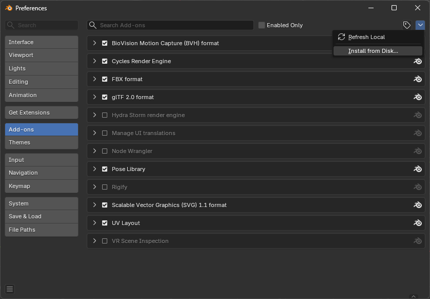
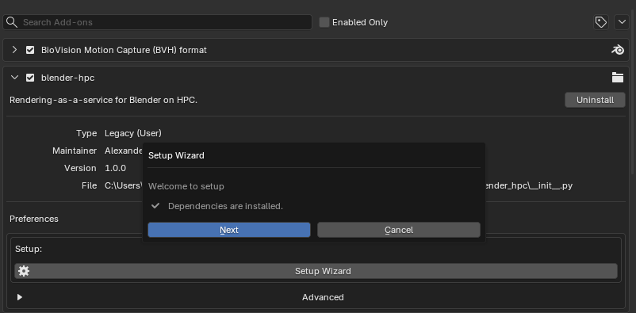
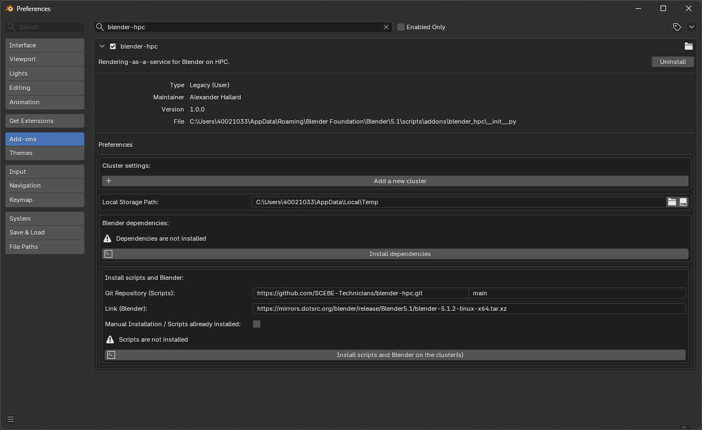
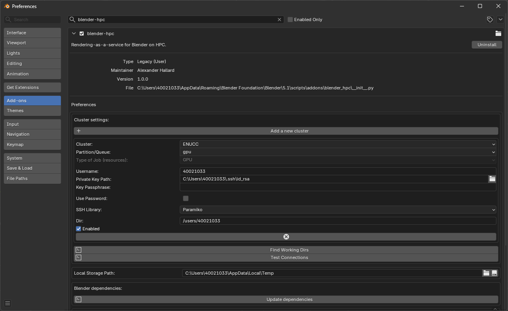
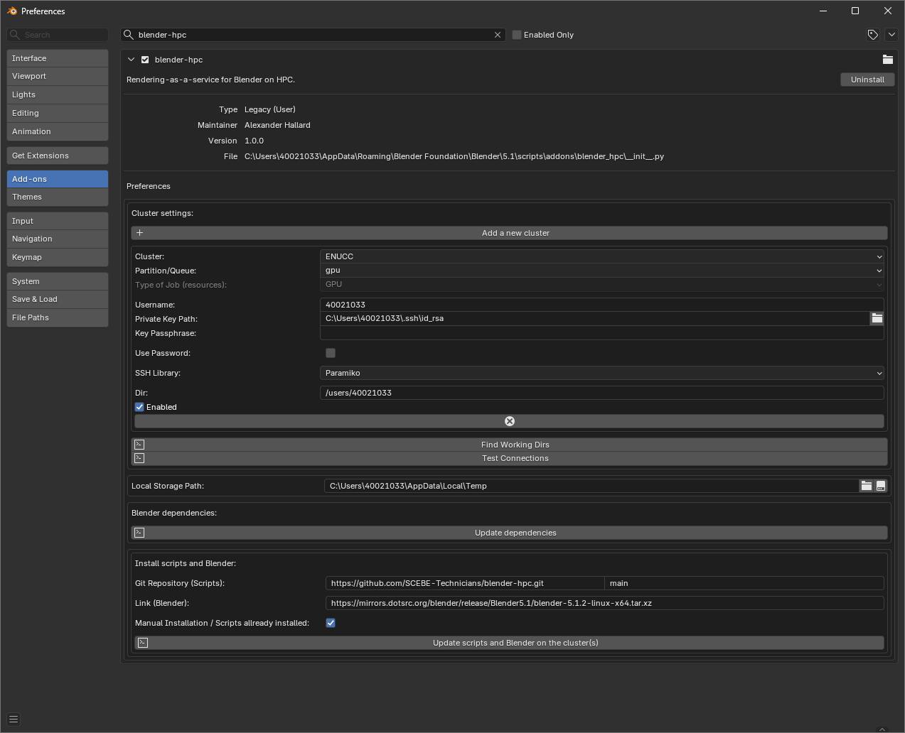
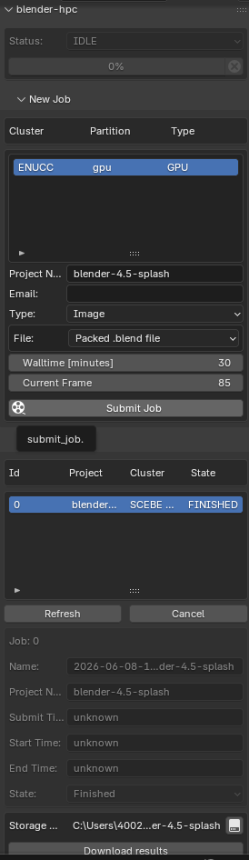

Using Blender with ENUCC
Description
The blender-hpc add-on lets you submit Blender render jobs from your local Blender session to ENUCC.
Prerequisites
Before using the add-on you should:
- Have an ENUCC account
- Have Blender installed on your local computer
- Be able to connect to ENUCC using SSH
You can connect using either an SSH key or your ENUCC password. SSH keys are usually more convenient. If you have not used SSH keys before, see the SSH key generation guide.
Installation
Downloading the Add-on
Download the latest add-on ZIP file from the releases page:
Keep the downloaded ZIP file somewhere you can find it from Blender.
Installing the Add-on in Blender
Open Blender, then go to:
Open the add-ons menu in the top-right corner and select Install from Disk....

Select the downloaded blender-hpc ZIP file.
After installation, search for:
Enable the add-on using the checkbox next to its name.
Following the Setup Wizard
After enabling the add-on, follow the setup wizard.

Warning
Blender may stop responding while dependencies or scripts are installed. This is expected. Wait for the setup wizard to finish before closing Blender.
Configure Advanced preferences
Initial Preferences
After enabling the add-on, the preferences panel should show the blender-hpc settings.
At first, the cluster settings, Blender dependencies, and cluster scripts may not yet be configured.

The preferences contain three main areas:
- Cluster settings
- Local Blender dependencies
- Scripts and Blender installation on the cluster
Installing Dependencies
The add-on uses local dependencies to communicate with ENUCC. Install these before setting up the cluster connection.
In the Blender dependencies section, press:
Warning
Blender may stop responding while the dependencies are being installed. This is expected. Wait for the installation to finish ~1 minute.
Adding ENUCC as a Cluster
In the Cluster settings section, press Add a new cluster.
Use the following settings:
You can also use Find Working Dirs to check which remote directories are available.
If you are using an SSH key, set Private Key Path to the path of your local private key.
If you are using your ENUCC password, enable Use Password and enter your password in the password field.
For example, if your ENUCC username is 40021033, the remote directory would usually be:
If you are using an SSH key, the private key is normally stored on your local computer. On Windows it is commonly in:
After entering the details, use Test Connections to check that Blender can connect to ENUCC.

Installing Scripts and Blender on ENUCC
The add-on also needs supporting scripts, and a Blender installation, to be available on ENUCC.
In the Install scripts and Blender section press:
If the scripts have already been installed, select Manual Installation / Scripts already installed

Usage
Submitting a Render Job
Once the add-on is configured, open the Blender render tab then select Render Engine Cycles find the blender-hpc tab in the side panel.
In the New Job section:
- Select the ENUCC cluster entry.
- Set the walltime in minutes. (Max time)
- Choose the frame or animation settings.
- Press Submit Job.
When the job is submitted, it will appear in the job list.
Checking and Downloading Results
Use Refresh to update the job list.
When the job has completed, its state should show as:
Select the job and use Download results to copy the rendered output back to your local computer then select the file explorer icon to view output.

Troubleshooting
The Add-on Cannot Connect to ENUCC
Check that:
- Your username is correct
- If using an SSH key, the private key path points to the correct local SSH key
- If using password authentication, Use Password is enabled
- Your SSH key or password works outside Blender using a normal SSH connection
- The cluster entry is enabled
Dependencies Are Not Installed
Return to:
Then use Install dependencies or Update dependencies.
Scripts Are Not Installed on ENUCC
Return to the add-on preferences and use:
If you have already installed the scripts manually, enable Manual Installation / Scripts already installed.
Jobs Stay Queued
If the GPU partition is busy, your job may wait in the queue before starting.